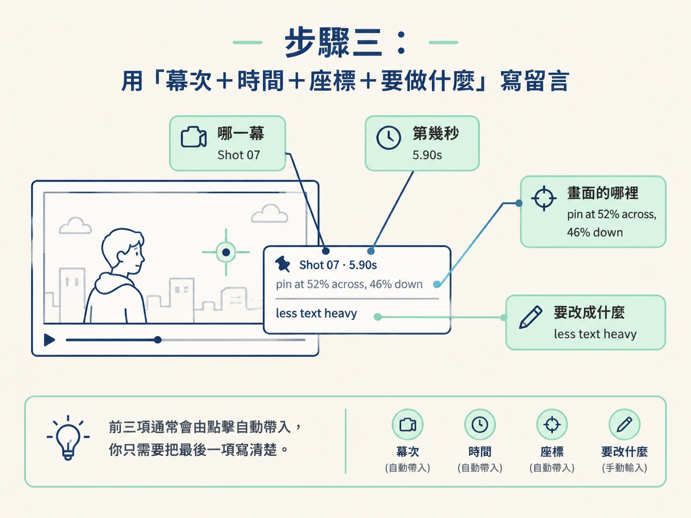
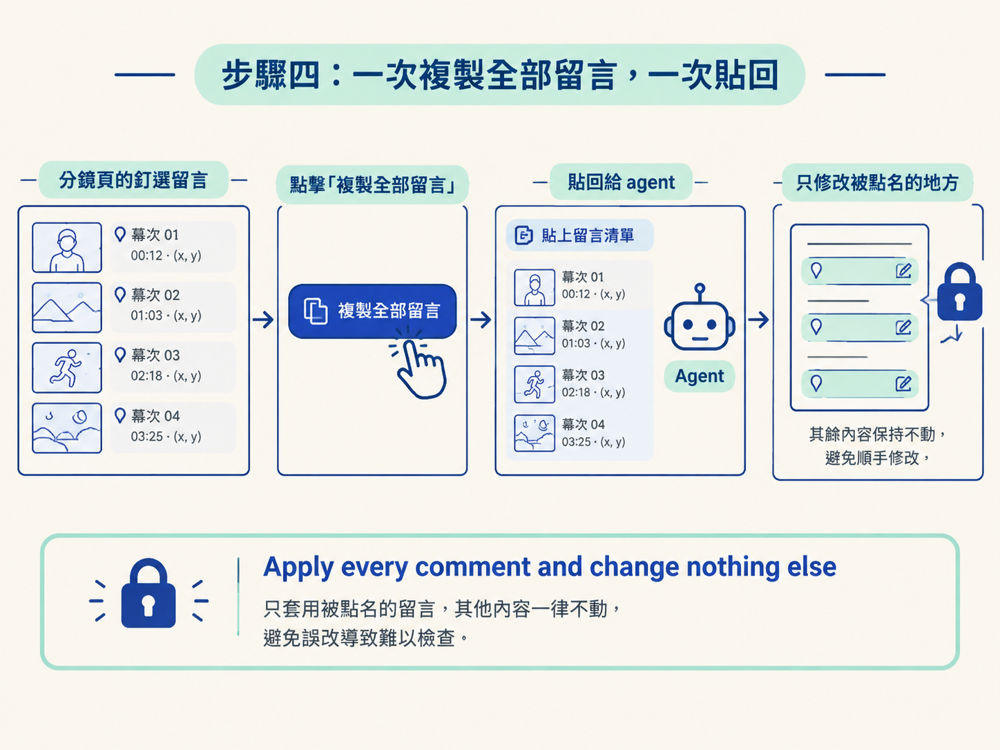

這一課的目標，是把你看分鏡時腦中那句「這裡好像怪怪的」，變成 agent 能直接執行的修改指令。
整條流程可以想成這樣：先把整份分鏡看完，再在畫面上點選需要修改的位置，寫下具體留言；最後一次複製全部留言，交給 agent 套用。做完後，你會得到一版只修改指定位置的分鏡，或直接進入影片製作。
開始前，你需要上一課做出的可點擊分鏡頁。這個頁面必須支援兩個動作：點畫面釘留言，以及複製全部留言。
你已經有一頁可以點擊的分鏡。接下來的問題不在怎麼看，而在怎麼把「我想改什麼」說準確。
例如，你在聊天視窗輸入：「第一幕感覺有點擠，文字可以少一點。」人通常能猜到大概意思，但 agent 仍然缺少幾個關鍵資訊：到底是第一幕的哪個部分擠？要減少標題、副標，還是其他文字？要少到什麼程度？
同一句話可能產生十種不同結果，而你可能一種都不滿意。釘選留言的作用，就是把口語的「怪怪的」換成帶有幕次、時間與位置的具體意見，讓 agent 不必靠猜。
不要一看到第一幕不順眼，就立刻留言並送出。你可能到了後面才發現，還有幾幕的方向也需要調整。若先送出一份不完整的清單，agent 做完後，你又得重新跑一輪。
正確順序是：先從頭到尾看過整份分鏡，再把每一幕想修改的地方記下來或直接釘上去，最後一次送出。這樣 agent 可以在同一輪處理所有問題，分鏡也比較像一次完成方向對齊，而不是零碎地補洞。
打開分鏡頁，看到想修改的地方後，直接點擊畫面上的那個位置。系統會在那裡釘上一則留言，並自動記錄三種資訊：
這就是點畫面留言和直接在聊天視窗打字的差別。你不必自己描述「大概在中間偏右」，系統已經替你記下準確位置。agent 收到的會是「第 5.9 秒、畫面這個位置要修改」，而不是「某一幕好像怪怪的」。
一則可執行的分鏡留言，通常包含四個部分：
下面是一則標準範例：
Shot 07, 5.90s, pin at 52% across, 46% down: less text heavy拆開來看，Shot 07 表示第七幕；5.90s 是這一幕的時間點；pin at 52% across, 46% down 是畫面位置，代表水平 52%、垂直 46%；最後的 less text heavy 才是修改要求，也就是讓文字不要那麼多、那麼重。
你可以把這個格式記成一句口訣：哪一幕、第幾秒、畫面的哪裡、要改成什麼。前三項通常會由點擊自動帶入，你只需要把最後一項寫清楚。留言不必長，但要具體到能動手。

下面這種寫法就太模糊了：
這幕文字太多，改一下。它沒有指出幕次、位置，也沒有說明要改多少，agent 只能自行猜測。相較之下，帶有座標的留言就算只有幾個字，也能把修改範圍鎖在正確的位置。
當你把整個看板看完、每一則留言都釘好後，按下「複製全部留言」。系統會把留言整理成一份清單，你只要把這份清單完整貼回給 agent。
貼回時，請清楚指定兩件事：套用每一則留言，其他都不要動；接著再選擇要重新看一版分鏡，還是直接製作影片。
可以直接使用下面這個句型，把留言貼到括號的位置：
Here are my comments on the storyboard: [paste
all your comments]. Each one names the shot, the
time and the spot I clicked. Apply every comment
and change nothing else. Then [show me a new
storyboard and wait / build the video from the
storyboard].Apply every comment and change nothing else 這句很重要。若沒有這個限制，agent 可能會「順手」修改你沒有提到的地方，讓你無法判斷這一輪到底改對了沒有，也增加重新檢查的成本。

最後一段則由你決定下一步：
一個完整的操作結果會是這樣：你先跑完整個看板，每一則留言都帶有幕次、時間與畫面座標；接著按一次複製，把整份清單貼回給 agent；agent 只修改你點名的地方，然後回傳更新後的分鏡，或直接開始製作影片。
你只貼一次留言清單，卻能一次交代所有修改。帶時間碼的釘選留言，就像替每個問題貼上地址：agent 不必在整張畫面裡尋找，也不必從模糊形容中猜測你的意思。
好的分鏡留言要包含四個元素：哪一幕、第幾秒、畫面哪個位置、要改成什麼。前三項由點擊自動帶入，你只要寫清楚最後一項。操作時先跑完整個看板，再一次複製全部留言、一次貼回，並明確要求「套用每一則留言、其他都不要動」。最後，再決定要重新產生一版分鏡，或直接進入影片製作。
現在你已經能留下精準的修改意見，也能把整份留言一次交回給 agent。接下來要判斷的是：什麼時候該再跑一輪分鏡，什麼時候可以放心進入渲染？下一課會用一個真實的 title-card 分鏡案例，說明這條界線。